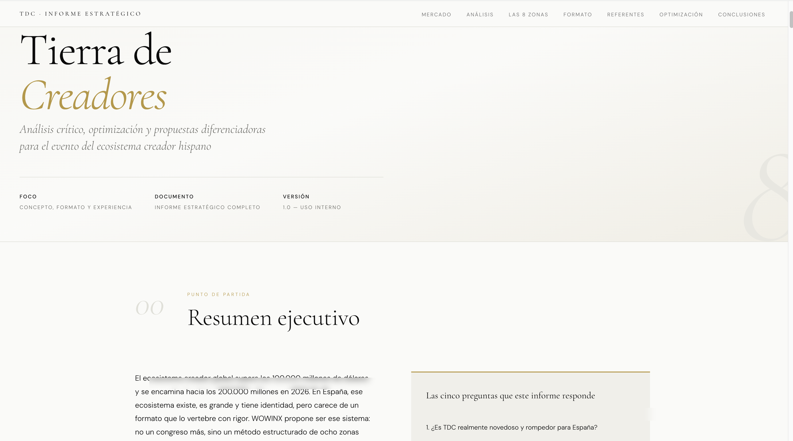
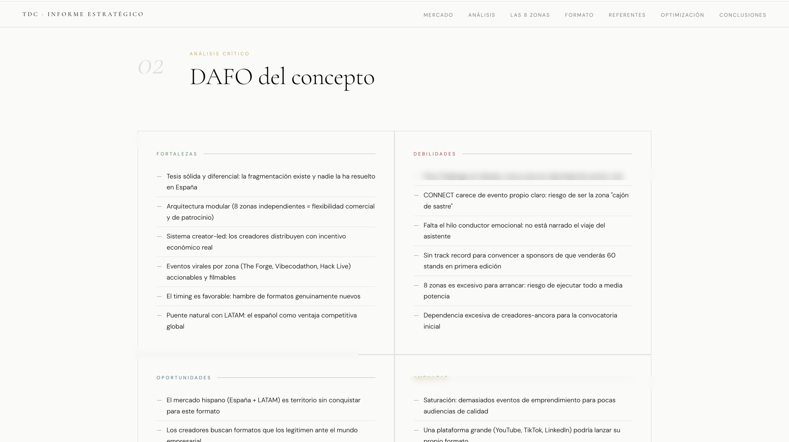
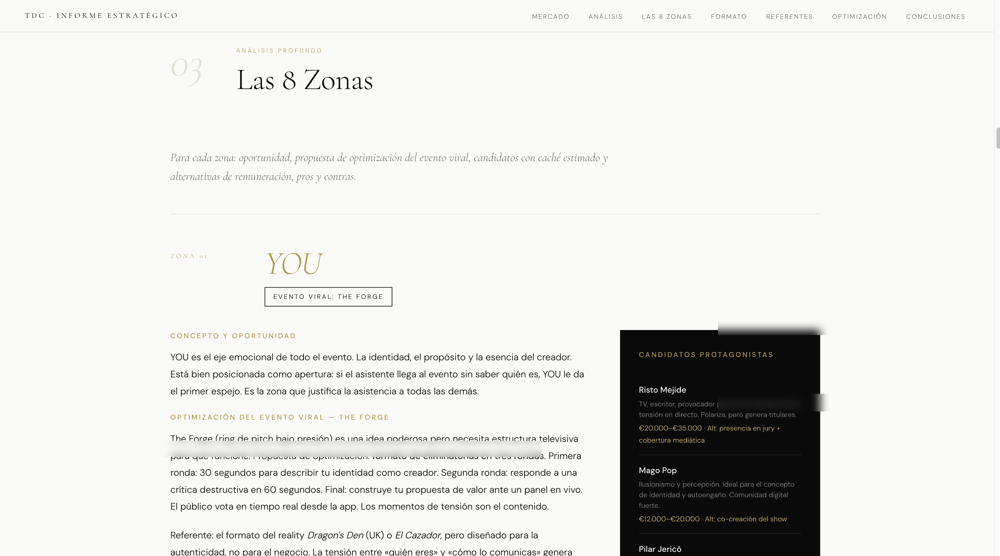
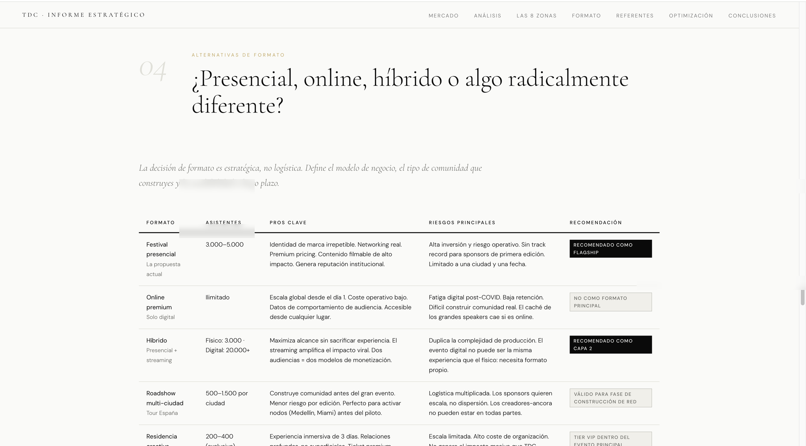
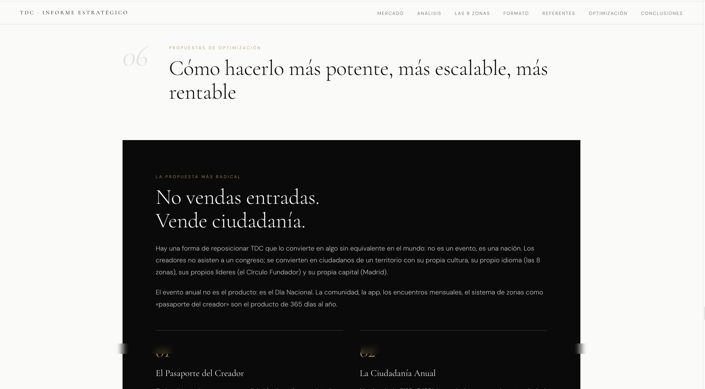
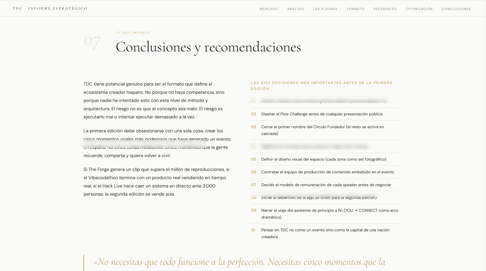

Diseñar un evento del ecosistema
creador hispano sin caer en el hype.
wowinX exploraba un formato de evento para creadores en el mercado hispano. Producimos el análisis estratégico que pasó la conversación de "cuántas entradas vendemos" a "qué tipo de pertenencia construimos".
El ecosistema creador hispano cambió las reglas.
El mercado global de creadores supera los doscientos mil millones de dólares y crece a doble dígito anual. La tentación, cuando una organización quiere entrar, es replicar un formato de evento tradicional con un nombre nuevo. El público joven hispano lleva cinco años demostrando que ese atajo no funciona — el caso Kings League es solo el ejemplo más visible.
Antes de comprometer presupuesto y prestigio, wowinX quería entender en qué jugar y en qué no. No buscaban un brief; buscaban un análisis crítico que pusiera en duda la propia premisa del formato.
Siete capítulos para reformular la apuesta.
El informe está estructurado para que cualquier persona del comité pueda entrar por el capítulo que más le importa. Cada uno cierra con una decisión accionable, no con una observación.
- 01 Contexto global y la lección Kings League. Qué cambió en el consumo de directo, qué está dejando de funcionar y por qué.
- 02 DAFO del concepto. Fortalezas, debilidades, oportunidades y amenazas — sin endulzar.
- 03 Análisis de las 8 zonas. Una por una, con formato viral asociado y palancas de optimización.
- 04 Matriz de formatos. Presencial · online · híbrido · roadshow — coste, alcance, riesgo y viabilidad.
- 05 Referentes internacionales transferibles. Qué se ha probado fuera y qué de eso aplica al mercado hispano.
- 06 Propuesta radical. "No vendas entradas, vende ciudadanía." El reposicionamiento que reorientó la conversación.
- 07 Priorización por fases y modelos de remuneración. Qué hacer en orden y cómo retribuir a los creadores en cada nivel.






De vender entradas a construir pertenencia.
El informe reformuló el planteamiento inicial del proyecto. Lo que iba a ser un formato de evento clásico pasó a articularse como una propuesta de comunidad — con fases, modelos de remuneración y prioridades concretas. La conversación interna dejó de ser sobre logística y pasó a ser sobre identidad.
accionable
candidatos reales
de partida
Cómo lo producimos.
Este tipo de informe se construye combinando investigación de mercado, mapeo de referentes, entrevistas con stakeholders y diseño de modelos de monetización. La velocidad la pone nuestro sistema interno de IA: agentes que sintetizan el material y estructuran cada capítulo bajo supervisión del consultor.
Conversemos veinte minutos.
El informe es confidencial — sólo lo compartimos bajo NDA. Si te interesa el formato o un análisis equivalente para tu propio caso, escríbenos.